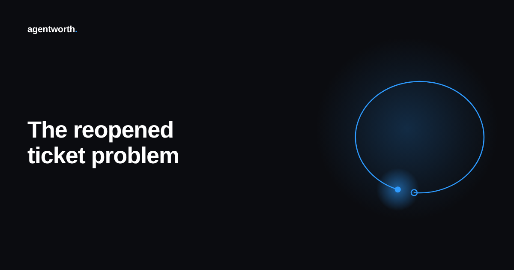

The reopened ticket problem in AI agent ROI claims

An agent answers a billing question, the customer says thanks, and the ticket closes. That counts as a resolution. The next morning the same customer writes in again, same account, same charge, still wrong, and this time a human has to sort it out. Two tickets now exist in the system. The first one is still sitting in the agent's resolved column, exactly as it was the moment it closed.
Nothing in most reporting pipelines goes back and corrects that first count. The agent gets credit for a resolution that, in practice, did not resolve anything.
A closed ticket is not the same claim as a held ticket
Resolution rate measures a moment, not an outcome. It tells you a conversation ended without an escalation flag at the time it ended. It does not tell you whether the underlying problem stayed fixed for a day, an hour, or five minutes. Those are very different claims, and an ROI number that only measures the first one is quietly making the second one on its behalf.
The gap matters more as agent scope grows. A narrow agent answering "what are your hours" rarely gets a comeback ticket, because there is nothing left to get wrong. An agent handling account changes, refunds, or multi step troubleshooting closes plenty of tickets that look identical to the simple ones in the dashboard, right up until the customer is back two days later with the same problem, now a little more annoyed.
Why this stays invisible by default
Most ticketing systems assign a new ID to a second contact unless someone manually links it to the first. Nothing forces that link to happen, and nobody is incentivized to go looking for it. The team running the agent sees a healthy resolution count. The team handling the recontact sees an ordinary new ticket. Neither view, on its own, reveals that these are the same unresolved problem counted twice, once as a win and once as unrelated support volume.
The cost math compounds the distortion. The first pass gets logged at the agent's low per ticket cost. The second pass, usually handled by a person, gets logged under regular support cost with no reference back to the agent at all. So the ROI number both overstates what the agent fixed and understates what it actually cost to really fix it.
What a defensible number needs to track instead
A held rate, not a closed rate. That means linking any contact from the same customer on the same issue within a set window, say 72 hours, back to the original ticket, and counting the original as resolved only if nothing came back in that window. Tickets that bounced back come out of the agent's credited total and the cost of fixing them properly gets attributed to the handoff, not buried in general support overhead.
This is also a useful lens on agent quality itself, separate from the finance question. A held rate that holds steady as volume grows is a real signal of a dependable agent. A closed rate that stays flat while the held rate quietly drifts down is an early warning that the agent is trading accuracy for speed, well before anyone notices it in a satisfaction score.
This is the kind of thing agentworth's audit log is built to catch, linking every recontact back to the original ticket so a resolution only counts once it has actually held. Try the free ROI calculator to see where your own number sits, or read the full ROI report for more on what a defensible AI agent ROI figure actually requires.